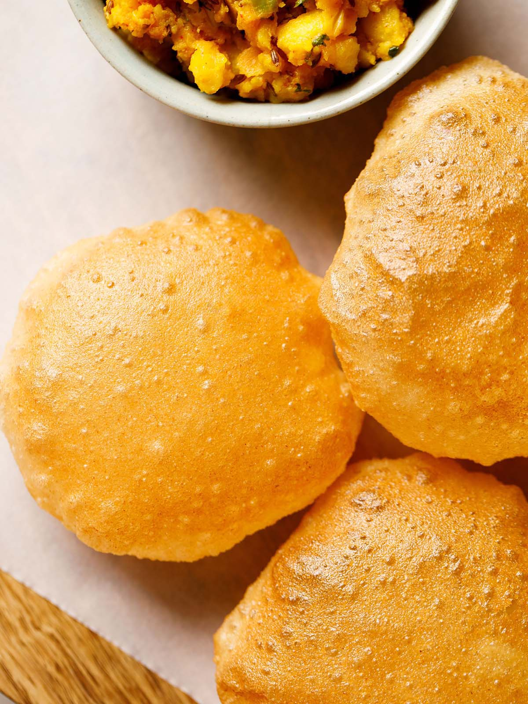
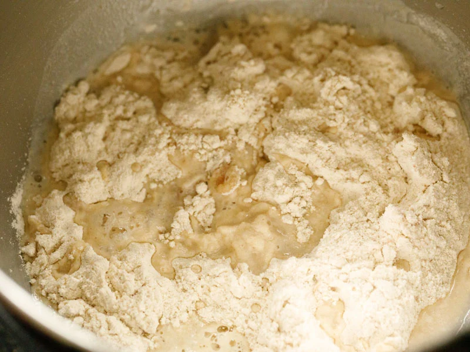
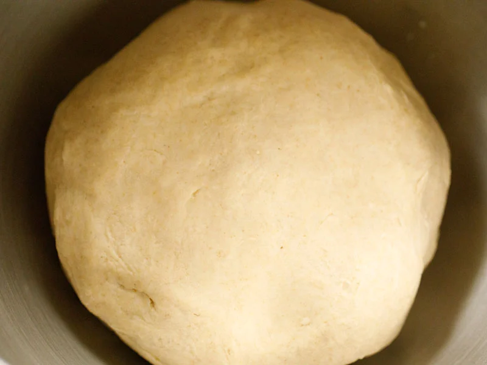
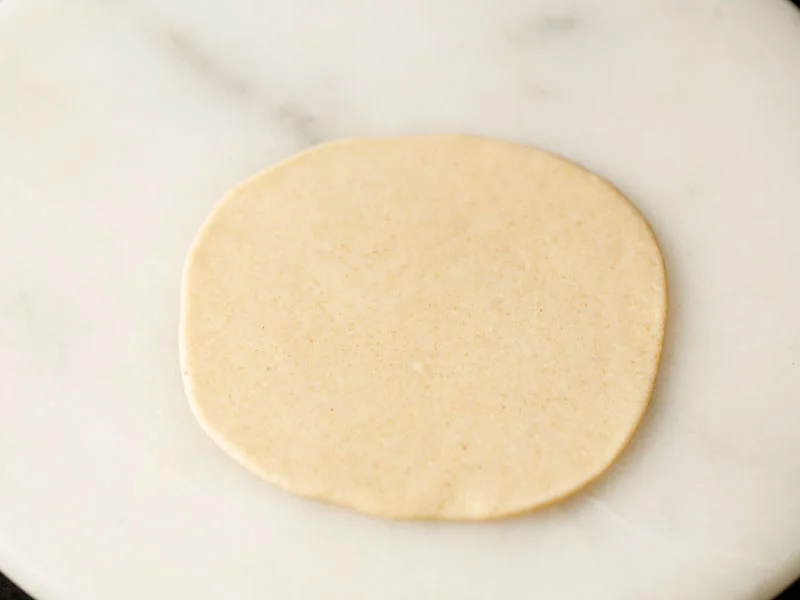
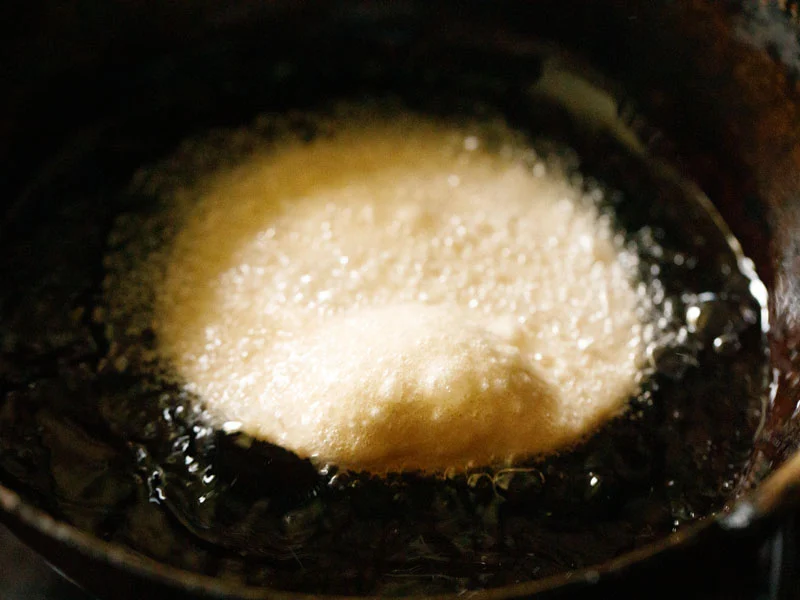
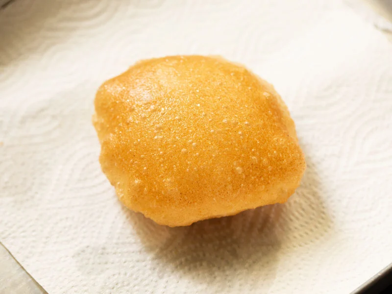

1. First, mix together 3 cups whole wheat flour (360 grams), 1 teaspoon salt, and 1 teaspoon oil (optional) in a large bowl. Tip: For a more crispy texture, you can add ¼ cup fine rava (sooji or semolina).
2. Add just a bit of water at a time as you begin to form the dough, making sure to not oversaturate the mixture.

3. Knead the dough with a wooden spoon or your hands, or use a standing mixer. Again, add only a splash or two of water at a time as you work.
5. When ready to use, divide the dough into about 30 small or 25 medium pieces, and roll each into a tight ball.

6. Next, use the palm of your hand to lightly flatten the dough ball, and then apply a bit of oil to the entire surface. This helps the bread fry evenly and rise properly, without the need to dust with flour first (which runs the risk of creating burnt flour particles in your oil).
7. Use a rolling pin to roll the dough evenly into circles that aren’t too thick or too thin. Ideally, you want them to be about ¼ inch thick.

8. Then place the rolled dough circles on a plate, and loosely cover with a clean kitchen towel so that they don’t dry out.
9. First, heat oil in a deep pan (kadai). Test the oil by dropping a small dough ball into oil. If it rises quickly to the top, then the oil is hot enough for frying. Once you have the oil to the right temperature, carefully add one rolled dough disc at a time.
10. It should begin to puff up almost immediately after it hits the hot oil.
11. Give it a nudge with a slotted spoon or spider spoon to keep the poori moving and therefore cooking evenly.

12. Gently press and nudge the poori on the sides with a slotted spoon or spider spoon to help it puff up completely.
13. Continue to fry for just a minute or two, until the oil stops bubbling and the bottom of the puri is golden to your liking.
14. Next, turn over and gently press down with the slotted spoon as it fries for a few more seconds. This will ensure that there’s a lovely brown color on all sides.
15. Then transfer the fried poori to a plate lined with paper towels to absorb any excess oil. Fry the remaining poori this way, lowering or increasing the oil temperature as needed to maintain the right level of heat. Very hot oil will darken the color or there may be uneven color patches on it.
16. Serve poori hot with any number of sweet or savory dishes, as I have mentioned below. Or enjoy by themselves for a tasty snack!
To keep pooris soft for a few hours, stack them in a steel container, sealing with a lid at room temperature. They will remain soft and won’t become dense and chewy.
